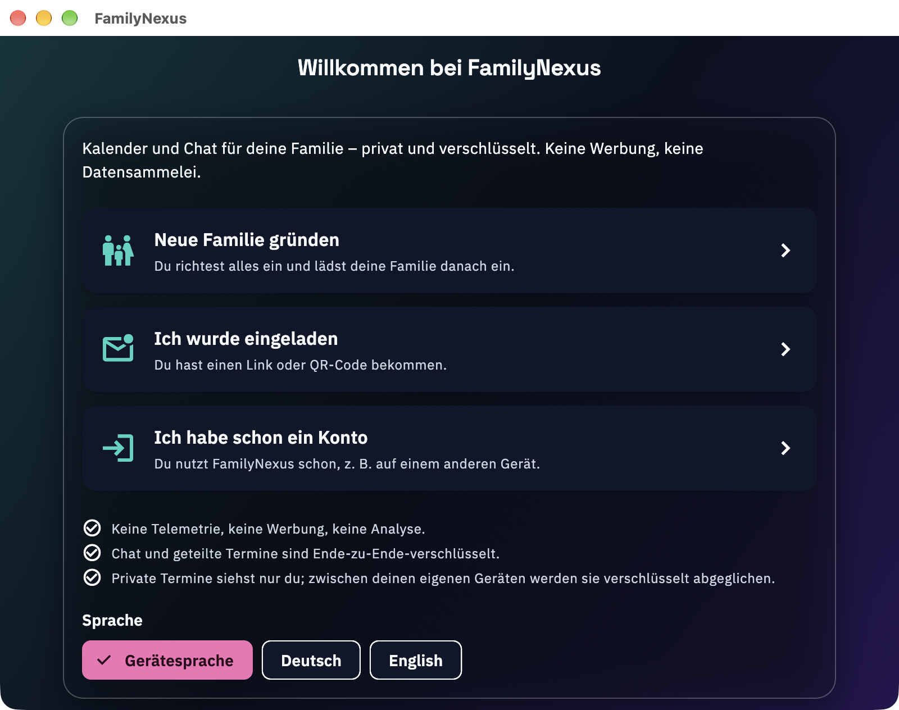
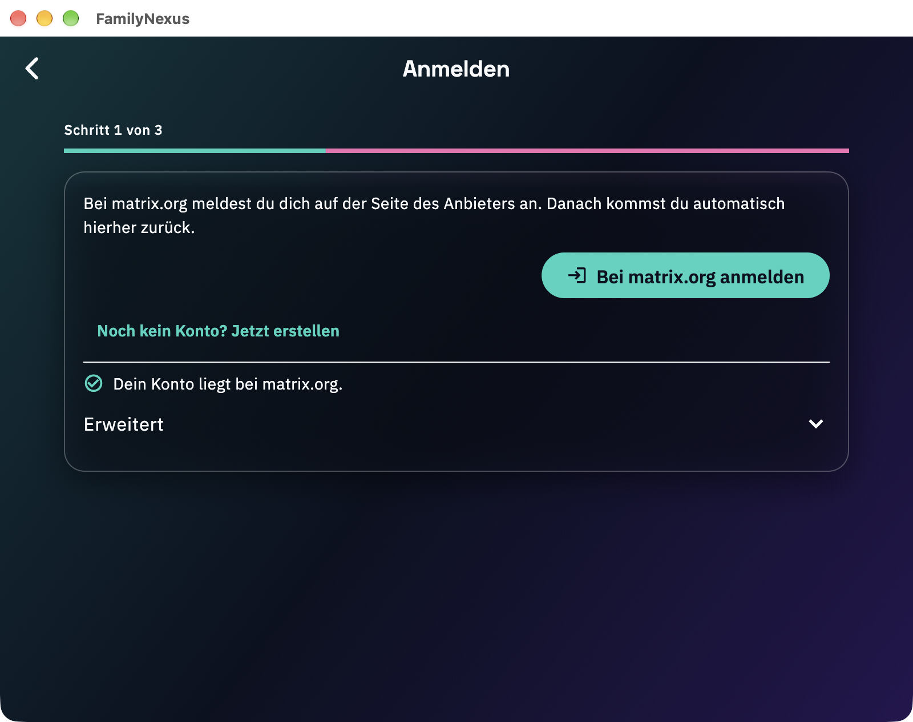
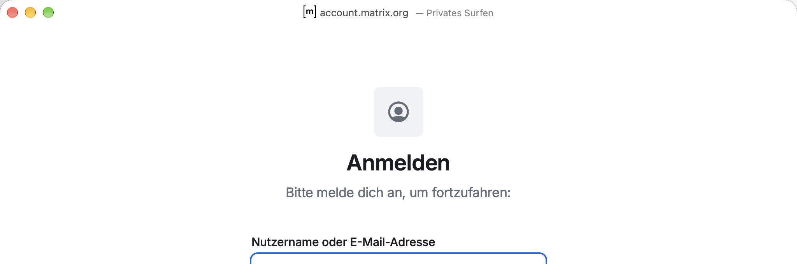
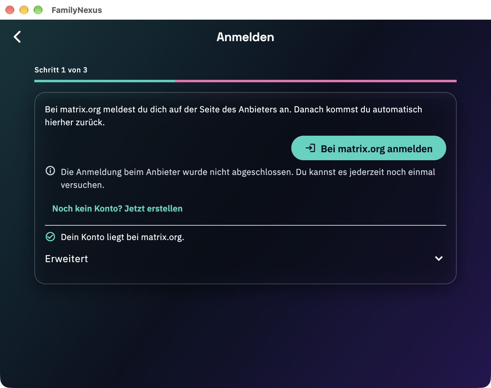
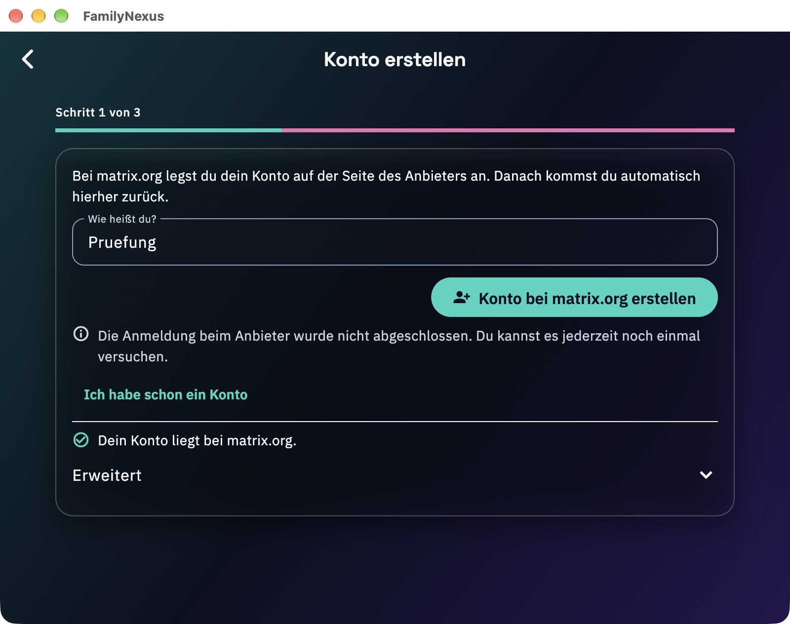
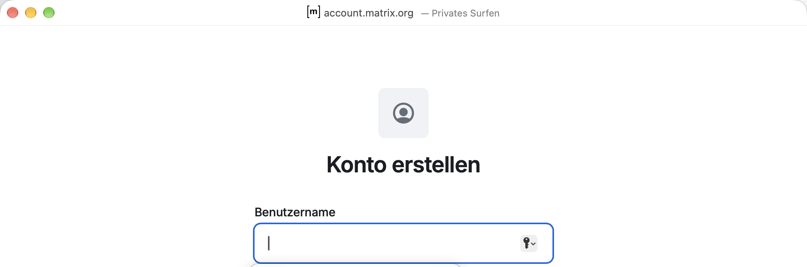
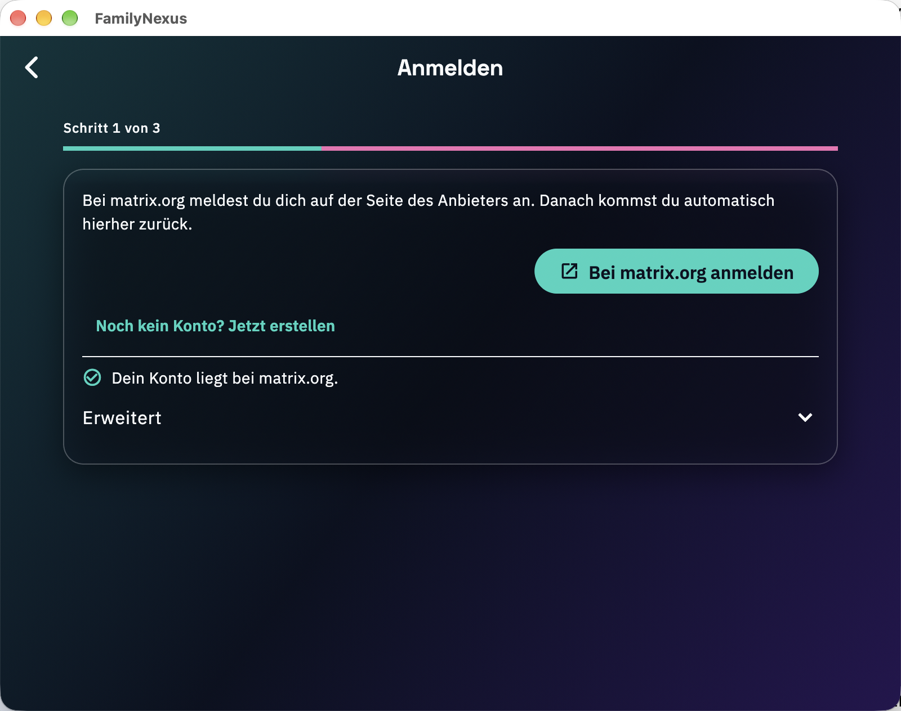
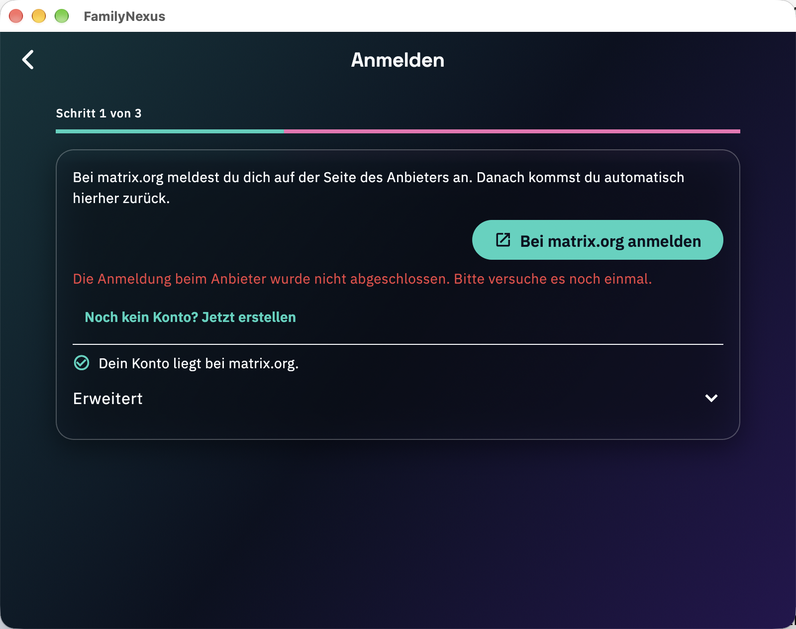

Erneuter Durchlauf des Plans nach dem Fix #430. Geprüft wird, ob Anmeldung und Kontoanlage bei matrix.org in einer System-Sitzung (ASWebAuthenticationSession) laufen, ob die Knöpfe nicht mehr „extern öffnen“ zeigen und ob ein Abbruch einen neutralen Hinweis statt eines roten Fehlers zeigt.
Die beiden Änderungen aus #430 wirken. Der Knopf „Bei matrix.org anmelden“ trägt ein Anmelde-Symbol (Pfeil in Tür), der Knopf der Kontoanlage „Person mit Plus“; „extern öffnen“ steht nur noch auf Linux, Windows und Web. Nach einem Abbruch zeigt die App einen neutralen Hinweis mit Info-Symbol in der zweiten Textfarbe („… Du kannst es jederzeit noch einmal versuchen.“), nicht mehr den roten Fehler aus Lauf 28.
Anmeldung und Kontoanlage öffnen weiterhin in der System-Sitzung, nicht im normalen Browser. Das Fenster trägt „Privates Surfen“, hat keine Werkzeugleiste und keine Tabs und heißt für Safari matrix-authentication-service (1024×768). In Vivaldi und Firefox entstand kein neues Fenster. Abbruch und Wiederholung hinterlassen keinen hängenden Zustand.
Safari bleibt der Vordergrundprozess. macOS hostet die Sitzung in Safari, die Menüleiste zeigt währenddessen „Safari“. Das ist nach Plan v02 zulässig (Kriterium 2), erklärt aber weiterhin Apples Formulierung „taken to the default web browser“. Der Befund aus Lauf 28 zur Darstellung bleibt als Hinweis für die Antwort an App Review bestehen (Abschnitt 5).
Offen: Die Unabhängigkeit vom Standardbrowser (A-09) wurde wie in Lauf 28 nicht geprüft, die echte Anmeldung mit Rücksprung ebenso nicht (kein eigenes matrix.org-Konto, CLAUDE.md). Details in Abschnitt 4.
| Nr. | Schritt | Ergebnis | Beobachtung |
|---|---|---|---|
| A-01 | Versionen, Signatur, Entitlements, Standardbrowser erfassen | ✓ bestanden | 1.2.3 (29); Kanal de.inneso.familynexus/webauth im Binary; Sandbox und network.client, kein network.server; Standardbrowser Safari. Vor dem Test liefen Firefox, Vivaldi und Safari-Hilfsprozesse, Safari hatte 0 Fenster. Die Anmelde-Symbole stehen im Quelltext (Icons.login, Icons.person_add_alt_1). |
| A-02 | Prüfkopie starten | ✓ bestanden | Willkommensseite mit „Neue Familie gründen“, „Ich wurde eingeladen“, „Ich habe schon ein Konto“ (Abb. 1). Eine Schlüsselbund-Abfrage erschien kurz nach dem Start und war nach unter 10 s weg (Lauf 28: rund 45 s); es wurde nichts eingegeben. |
| A-03 | „Ich habe schon ein Konto“ | ✓ bestanden | matrix.org vorbelegt („Dein Konto liegt bei matrix.org“). Der Knopf trägt das Anmelde-Symbol, kein „extern öffnen“ (Abb. 2). |
| A-04 | „Bei matrix.org anmelden“, 6 s warten | ✓ bestanden | account.matrix.org in der System-Sitzung (Abb. 3). Safari ist Vordergrundprozess, Safari-Fenster 0 → 1, Titel „Privates Surfen“, keine Werkzeugleiste, keine Tabs; Vivaldi 0 → 0, Firefox 1 → 1, also kein Tab in einem anderen Browser (Safari-Tabs wurden nicht gezählt). |
| A-05 | Sitzung schließen (Abbruch) | ✓ bestanden | FamilyNexus ist wieder vorn, Safari ohne Fenster. Die App zeigt den Hinweis mit Info-Symbol, ohne Fehlerfarbe (Abb. 4). Der Knopf bleibt bedienbar. |
| A-06 | A-04/A-05 wiederholen | ✓ bestanden | Zweiter Durchlauf mit gleichem Ergebnis; Beleg sind die Fensterlisten am Ende von logs/A-04.txt. Die Aufnahme A-06.png ist Byte für Byte gleich A-05.png, weil beide denselben Oberflächenstand nach dem Abbruch zeigen; sie belegt den Zustand, nicht den zweiten Ablauf. |
| A-07 | Kontoanlage über „Neue Familie gründen“ | ✓ bestanden | Name „Pruefung“ nur in der App-Maske eingetragen. „Konto bei matrix.org erstellen“ (Symbol „Person mit Plus“) öffnet die Seite „Konto erstellen“ in derselben System-Sitzung (Abb. 6). Im Anbieterfenster wurde nichts eingegeben, nur geöffnet und geschlossen. |
| A-08 | Aufräumen | ⚠ mit Befund | Nach Abbruch der Kontoanlage Rückkehr mit Hinweis (Namensfeld blieb gefüllt). App beendet, Prüfkopie gelöscht. Der Container de.inneso.familynexus.apple4 lässt sich nicht ganz löschen (macOS: „Operation not permitted“ für die geschützte Metadatendatei), der Datenordner ist weg. Nutzer-Container unberührt. |
| A-09 | Anderer Standardbrowser | ○ nicht durchgeführt | Standardbrowser ist Safari; die Systemeinstellung des Nutzers wurde nicht verändert. Keine Aussage zur Unabhängigkeit vom Standardbrowser. |
Alle Aufnahmen stammen von der Prüfkopie des Builds. Im Anmeldefenster erschien beim Öffnen ein Autofill-Popup des Systems (eigenes kleines Safari-Fenster, siehe logs/A-04.txt). Es wurde nicht bedient. Die Aufnahmen A-04 und A-07 sind deshalb auf Titelleiste und Seitenkopf zugeschnitten; frühere Vollaufnahmen wurden verworfen und nicht abgelegt.



logs/A-04.txt). Zugeschnitten.




| Nr. | Kriterium (Kurzform) | Ergebnis | Begründung |
|---|---|---|---|
| 1 | Seite erscheint als Fenster der System-Sitzung vor der App, nicht im Browser | ✓ erfüllt | Für Anmeldung (A-04, A-06) und Kontoanlage (A-07) an Fensterliste und Aufnahme belegt. |
| 2 | Fenster ist toolbarlos und „Privates Surfen“; Safari darf Vordergrund sein | ✓ erfüllt | Kein neues Fenster in Vivaldi oder Firefox. Die Anzahl der Safari-Tabs wurde nicht gezählt, es fehlt die Tab-Leiste. |
| 3 | Abbruch führt zurück mit Hinweis (kein roter Fehler); Wiederholen funktioniert | ✓ erfüllt | Hinweis in A-05, A-06 und A-08; Wiederholung in A-06. |
| 4 | Gilt für Anmeldung und Kontoanlage, unabhängig vom Standardbrowser | ⚠ teilweise | Anmeldung und Kontoanlage belegt, Unabhängigkeit vom Standardbrowser nicht (A-09). |
ASWebAuthenticationSession beruht auf Darstellung und Kanalname im Binary; es gibt keine Logzeile dazu.flutter build macos --release am 14.11. um 02:06 aus main @ bd6f25d), kein signierter Store-Build. Der vorhandene Build vom 13.11. war älter als #430. Die Build-Nummer blieb unverändert.System Events-Aufruf zum Auslesen der Fensterposition schlug einmal fehl (Fehler −1728); danach wurde mit CoreGraphics gearbeitet. Das Zuschneiden mit sips ging zweimal schief, die endgültigen Aufnahmen entstanden mit screencapture -R.Thank you for the feedback. FamilyNexus uses ASWebAuthenticationSession on macOS and iOS for sign-in and account creation with the identity provider (matrix.org). The app does not open the default browser for these flows. On macOS the system presents the session in a Safari-hosted window titled "account.matrix.org – Private Browsing" without toolbar or tabs, which can look like Safari. The attached screenshot shows this window above the app. After closing or completing it, the session returns to FamilyNexus. The build you reviewed is stated as 1.2.1 (27); our build 27 is version 1.2.2, the current submission is 1.2.3 (29). If you still see the default browser, could you tell us at which step and attach a screenshot or recording?
Der Text ist ein Entwurf und wird nicht abgeschickt. Ein Nachtest auf einem signierten Build und mit echter Anmeldung ist vorher sinnvoll (siehe „Was nicht belegt ist“).
| Nr. | Vorschlag (Lauf 28) | Stand |
|---|---|---|
| 1 | Symbol der Knöpfe von „extern öffnen“ auf ein Anmelde-Symbol ändern | ✓ umgesetzt (#430), in A-03 und A-07 belegt |
| 2 | Review-Notizen für macOS um den Satz zur Safari-gehosteten Sitzung ergänzen | ○ nicht geprüft (Teil von #430 laut Titel, in diesem Lauf nicht kontrolliert) |
| 3 | Abbruchhinweis als neutrale Info statt Fehlerfarbe | ✓ umgesetzt (#430), in A-05, A-06 und A-08 belegt |
| 4 | Testplan v02: Kriterium 2 für macOS anpassen | ✓ umgesetzt, dieser Lauf folgt Plan v02 |
| 5 | Codepfad der Sitzung direkt belegbar machen (Debug-Anzeige oder Test-Hook) | ○ offen, weiterhin nur indirekt belegt |
Neu vorgeschlagen: A-09 auf einem zweiten Mac-Konto mit Chrome oder Firefox als Standardbrowser nachholen (die Systemeinstellung des Nutzers wird in diesem Projekt nicht umgestellt).